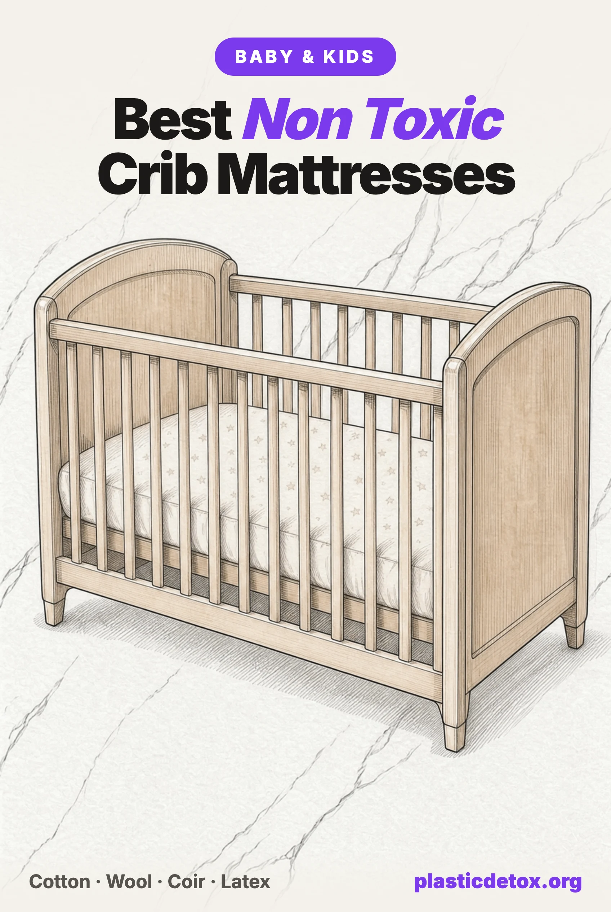

Best Non Toxic Crib Mattresses: What Testing Found in the Cover, the Core and the Waterproofing (2026)

The 30 Second Summary
- Plastic can hide in three places: the core, the way the mattress passes the fire tests, and the waterproof layer.
- The cover is where testing keeps finding plastic chemistry. In a University of Texas study, 17 of 20 crib mattress covers carried plasticizers at up to 35 percent by weight, and body heat raised emissions about 2.5 fold.
- Waterproofing is where PFAS turns up. The Ecology Center found fluorine indicating PFAS treatment on 3 of 13 tested crib mattress covers.
- Our top pick is the most reviewed certified mattress, the wipe clean Naturepedic Organic Classic Lightweight 2 Stage: MADE SAFE, no polyurethane foam, no vinyl, no flame retardants. Its core is polyethylene foam, and we say so.
- For no plastic in the mattress, the KATU organic crib mattress is coconut coir and latex under cotton and wool. Firm, flat and snug still comes first.
Why the Crib Mattress Matters Most
A newborn spends most of the day asleep with its face a few inches from one warm surface, which is why our nursery setup guide puts the mattress first. In a 2014 University of Texas study of 20 crib mattresses, every one emitted volatile organic compounds, the emission rate rose about 2.5 fold from room to skin temperature, and a heated infant manikin's breathing zone carried 1.8 to 2.4 times the VOCs of the room.
Heavier chemicals follow the same pattern. A 2025 University of Toronto study found 12 semivolatile compounds coming off children's mattresses at room temperature, 20 at body temperature, and 21 once a baby sized weight was added. Babies also breathe about ten times more air per kilogram than adults.
What Testing Found
The Texas team then took the same 20 mattresses apart. In their 2015 analysis, 19 covers were soft PVC and 17 carried plasticizers at 1 to more than 35 percent of the cover's weight. Two covers made after the 2008 federal phthalate limits still carried DEHP far above them, the highest in the cheapest mattress. Eight of 20 foam layers held flame retardants, and an "eco" soy foam mattress had one of the heaviest plasticizer loads. Warming a vinyl cover, a companion study found, sharply increases its phthalate emissions.
| Study | What was tested | What it found |
|---|---|---|
| Boor et al., University of Texas, 2014 and 2015 | 20 crib mattresses | 17 of 20 covers with plasticizers; 8 of 20 foams with flame retardants; breathing zone VOCs 1.8 to 2.4x room air |
| Ecology Center, 2020 | 13 crib mattresses, 13 brands | All 6 PVC covers with plasticizers; 3 covers with fluorine indicating PFAS; antimony in 5 mattresses; 4 of 13 matched brand disclosures |
| Toxic-Free Future, 2022 | 7 mattress pads and protectors | 4 of 7 contained PFAS, including a crib mattress pad cover at 120 ppm total fluorine |
| Vaezafshar et al., University of Toronto, 2025 | 16 children's mattresses | "PVC alternative" covers still carried phthalates; one foam held a flame retardant Canada banned in 2014 |
The Ecology Center's study is the only recent US test that names brands. Every PVC cover contained plasticizers, now mostly unregulated replacements such as DOTP and DINCH. Covers from Colgate, Safety 1st and Nook showed fluorine high enough to suggest PFAS waterproofing, and Newton Baby's polyethylene core contained a phosphorus based flame retardant the brand had disclosed. The mattresses were bought in 2018 and 2019, so read the results as patterns.
Dropping PVC has not fixed the cover on its own. In the Toronto study, a PEVA cover sold as the chlorine free alternative held a phthalate over Canada's limit for children's mattresses, an SEBS cover carried 2,700 mg/kg of DINP, and the cover polymer did not predict its chemical load.
PFAS appear where brands add water or stain resistance. Toxic-Free Future found PFAS in 4 of 7 mattress pads, while 3 showed no detectable fluorine, so PFAS free waterproofing exists. Complaints filed against Nook in 2023 and Saatva in 2024 allege PFAS in organic branded crib mattresses; both are allegations, not court findings.
The Three Layers to Check
The core. Polyurethane foam is the conventional default and carries the category's flame retardant history: a 2011 Duke analysis of 101 foam baby products, portable crib mattresses among them, found flame retardants in 80 percent. "Soy foam" and "plant based foam" can still be polyurethane. Polyester fiber cores are often recycled bottles, and polyethylene cores avoid foam chemistry but are plastic. Coconut coir bound with latex, natural latex, cotton and steel coils are the plastic free cores.
The fire solution. Every crib mattress must pass both federal fire tests, the cigarette test in 16 CFR 1632 and the open flame test in 16 CFR 1633, despite claims that cribs are exempt. Makers add chemicals, wrap the core in a barrier, or use a core that does not feed a fire. The Ecology Center found barrier wraps on all six foam mattresses it tested, two with antimony, and organic mattresses use wool. The California Department of Public Health found undisclosed fiberglass in a Graco crib and toddler mattress, so look for a stated "no fiberglass."
The waterproof layer. Avoid vinyl and PFAS finishes first. Next come the plastic films: polyethylene, used on Naturepedic's surface, and polyurethane or TPU, common in protectors. The plastic free answer is no film, with a thin protector on top, and the American Academy of Pediatrics' 2022 safe sleep statement sets the rule for it: a cover for wetness "should be tightly fitting and thin."
What the Rules Cover, and What They Do Not
The federal crib mattress standard, 16 CFR 1241, in force since August 2022, tests firmness, fit, coils and warning labels, and contains no chemical requirement at all. Federal phthalate limits reach a crib mattress's vinyl layer, the CPSC confirms, but only eight named phthalates, not the DINCH and DOTP that testing now finds. Federal action on flame retardants is a 2017 guidance the CPSC calls nonbinding.
States went further. California has barred more than 1,000 ppm of covered flame retardants in any component of a crib mattress since 2020, and Washington and Vermont restrict named flame retardants in children's products. Regulation sets a floor, and the certifications below are how you choose above it.
Certifications, Decoded
The Ecology Center rates GOTS, GOLS and MADE SAFE as strong, OEKO-TEX and GREENGUARD as narrower, and CertiPUR-US as a second party mark created by the foam industry.
| Mark | What it checks | What it does not |
|---|---|---|
| GOTS | Organic fiber, at least 95% for the "organic" grade; bans PFAS, phthalates and halogenated, phosphate and antimony flame retardants in certified textiles | Foam, springs and waterproof films. "Made with GOTS cotton" is not a GOTS certified mattress |
| GOLS | Organic origin of the latex, with harmful substance and emission limits | Anything that is not latex |
| MADE SAFE | The finished product's materials, screened against more than 15,000 banned substances | Organic content |
| GREENGUARD Gold | Chamber emissions of VOCs and formaldehyde | What the materials contain, including plasticizers, PFAS and flame retardants |
| OEKO-TEX Standard 100 | The certified textile, tested for more than 1,000 harmful substances | The core or anything else not certified |
| CertiPUR-US | Polyurethane foam made without certain chemicals, with low emissions | The cover, barrier and waterproof layer |
Look any logo up before trusting it: UL lists GREENGUARD Gold products in its SPOT database, and GOTS publishes its certified suppliers. Researching this article, we found a GREENGUARD Gold claim with no UL listing and an "organic latex" claim with no GOLS certificate.
Wondering about the mattress already in your crib? Type the brand into our free Product Check and it will tell you what we know about its materials, recalls and lawsuits.
Our Picks
Every pick passed our five point vet: materials from the brand's disclosures and law labels, certificates checked in the certifier's database, independent tests, lawsuits and recalls. None contains polyurethane foam, vinyl, a PFAS finish or added flame retardants. The Amazon picks were in stock the day we published, and owner reviews decide the top pick.
Firm, flat, snug, and nothing on top
Suffocation and entrapment outrank every chemical on this page. Use a firm, flat, noninclined mattress with a fitted sheet and nothing else in the crib, and no toppers before age one. Most recalls since the federal firmness and fit standard took effect have been cheap aftermarket play yard and mini crib mattresses sold online, including the Criblike recall in November 2025. Buy from a known brand and check that no more than two fingers fit between mattress and crib side.

Naturepedic Organic Classic Lightweight 2 Stage
GOTS organic cotton cover and batting over a polyethylene foam core with PLA batting, sealed under a sugarcane polyethylene waterproof surface. No polyurethane, fiberglass or flame retardants. Two stage, 11 pounds. MADE SAFE.
View →
KATU Organic 2 Stage Crib Mattress
Organic cotton cover over an organic wool layer, latex bound organic coconut coir on the infant side and organic latex on the toddler side. No waterproof film, no polyurethane. GOTS and GOLS certified.
View →
Babyletto x Avocado Organic Crib Mattress
GOTS organic cotton cover and wool batting over latex bound coconut husk fiber and individually wrapped steel coils. No polyurethane foam, no vinyl, no built in waterproofing. GREENGUARD Gold. Two stage, 23 pounds.
View →
My Green Mattress Emily
GOTS organic cotton cover quilted over organic wool, a latex bound organic coconut coir layer and a steel innerspring. No synthetic waterproofing. MADE SAFE and GREENGUARD Gold. Same firmness both sides.
View →
Avocado Organic Crib Mattress
GOTS organic cotton and wool cover over latex bound organic coconut husk on the infant side and organic Dunlop latex on the toddler side. No coils, no waterproofing. MADE SAFE, GREENGUARD Gold, EWG Verified.
View →Why the Naturepedic leads
Five mattresses passed, so owner reviews set the order, and Naturepedic's Classic has the deepest record: 4.8 stars across more than 560 reviews on the brand's site, plus 250 Amazon ratings. Its certificates sit on the finished mattress: a MADE SAFE certificate naming this model, valid through February 2027, and UL listings for GREENGUARD Gold and non detectable PFAS. Consumer Reports named it a Top Choice in a materials review run with MADE SAFE, which also certifies the brand.
The caveat is on its law label: the fill is 41 percent cotton batting, 40 percent polyethylene foam and 19 percent PLA, a plant derived plastic, under a sugarcane polyethylene surface. No polyurethane, vinyl or flame retardant chemistry is why it passes, but it is not plastic free. Choose it if you want a surface you can wipe clean.
The plastic free mattresses
KATU is the plastic free option on Amazon, with GOTS and GOLS certificates in the brand's own name and 4.8 stars, though across only 27 ratings. Its spec table reads "Fire Retardant," which its layer list does not explain; GOTS prohibits halogenated, phosphate and antimony flame retardants in certified textiles, and the wool layer is the likely barrier. Skip it if latex allergy runs in the family.
The Babyletto x Avocado mattress is Avocado's coconut husk and pocketed coil build. Latex appears only as the binder in the coconut husk, UL's database lists it as GREENGUARD Gold, and it has no waterproof layer. At 23 pounds and 28 Amazon ratings, it is heavier and less reviewed than the Naturepedic.
My Green Mattress builds the Emily in Illinois, and Consumer Reports rated it a Top Choice. Its MADE SAFE certificate runs through May 2027 and UL lists it as GREENGUARD Gold. One gap: the GOLS certificate posted on the brand's site expired on September 5, 2026, with no renewal posted when we checked.
Avocado's Organic Crib Mattress has the longest verified certificate list we found, with MADE SAFE, GREENGUARD Gold and EWG Verified on the crib model plus GOTS and GOLS. The only synthetics are a polypropylene lining on the side panels and 3 percent elastane in the cover. A 2023 suit over Avocado's material claims was dismissed, and a 2026 suit concerns website sale pricing, not materials.
Across the border, Obasan's organic crib mattress is 2 inches of organic latex over 2 inches of coconut coir, GOTS and GOLS certified, with a wool moisture pad in the box instead of a plastic barrier. It ships from Canada, so check delivery first.
A mattress without a waterproof layer needs a protector, and the AAP is specific: thin and tightly fitted, never a topper. A wool moisture pad handles wetness without plastic, while most waterproof protectors use a film; Avocado's own uses polyurethane. If yours has a film, ask whether it was tested for PFAS.
The Picks Side by Side
| Mattress | Core | Waterproof layer | Fire solution | Plastic in the mattress |
|---|---|---|---|---|
| Naturepedic Organic Classic Lightweight | Polyethylene foam, PLA and organic cotton batting | Sugarcane polyethylene surface | No barrier or chemicals needed | Yes: PE foam, PLA, PE surface |
| KATU Organic 2 Stage | Latex bound coconut coir, organic latex | None | Wool layer | None stated |
| Babyletto x Avocado | Latex bound coconut husk, pocketed coils | None | Wool batting | None in the materials list |
| My Green Mattress Emily | Latex bound coconut coir, steel innerspring | None | Wool | 1% elastane in the cover |
| Avocado Organic Crib | Latex bound coconut husk, organic Dunlop latex | None | Wool | Polypropylene side lining, 3% elastane |
Brands We Did Not Pick
Foam and vinyl: Graco, Dream On Me, Serta, Safety 1st, Sealy Baby, Milliard, Moonlight Slumber
Graco's Premium Foam mattress, made under license by Stork Craft, is Amazon's best selling crib mattress, and its law label reads 100 percent polyurethane foam. When the Ecology Center tested it, the foam held chlorine and antimony, markers of a flame retardant, and antimony turned up in a barrier the company had said contained none; current labels say no added flame retardants. Graco boxed Stork Craft foam mattresses were recalled in 2015 for failing the open flame standard.
Dream On Me's best selling Twilight has a vinyl cover that tested with the plasticizer DOTP and antimony at levels indicating antimony trioxide, and the brand recalled about 23,400 crib and toddler mattresses in 2017 for failing the federal flammability standard.
Serta's Perfect Slumber, sold by Delta Children, lists a vinyl cover over a recycled bottle fiber core, and the Serta PVC cover the Ecology Center tested carried 143 ppm of EHDP, a plasticizer that can also act as a flame retardant.
Safety 1st's Heavenly Dreams listing describes a 100 percent vinyl cover while claiming to be PVC free. The Safety 1st cover the Ecology Center tested carried DOTP, 411 ppm of EHDP and fluorine indicating PFAS.
Sealy's Soybean Foam Core mattress, made by Kolcraft, is 76 percent polyurethane foam by its law label, with the soy share undisclosed and a cover Amazon lists as vinyl.
Milliard layers memory foam over polyurethane foam, with no emissions certification and an undisclosed barrier and waterproof layer, and the AAP warns that soft mattresses, including memory foam, can raise suffocation risk.
Moonlight Slumber's Little Dreamer, a Wirecutter pick, has a fiberglass free fire sock, and the Ecology Center flagged nothing in it. But in a 2017 case settled by consent order, the FTC charged that its "plant based foam" claims, including for this model, were misleading because the cores were substantially polyurethane.
Polymer cores: Newton Baby, Lullaby Earth, Babyletto Pure Core, Organic Dream
Newton Baby holds 4.9 stars across more than 4,200 Amazon ratings, and its fully washable design is clever. Its Wovenaire core is 90 percent air and 10 percent polymer, which the Ecology Center identified as polyethylene with a built in phosphorus based flame retardant that Newton had disclosed; the brand has not said whether that changed. The waterproof model adds a TPU layer. It is a real step up from foam and vinyl, and still a plastic core.
Lullaby Earth, Naturepedic's budget line, is entirely polyethylene and polyester, with a TPU cover on the breathable models. Its mattresses are not MADE SAFE certified, and Consumer Reports rated their materials "possible risks."
Babyletto's Pure Core law label lists a 100 percent polyester core and batting of 80 percent modacrylic, a synthetic fire resistant fiber whose antimony content Babyletto does not state, under a cover with a polyethylene backing.
Organic Dream, a Babylist favorite, describes a "food grade polymer" core without naming the polymer or its fire barrier, and we found no UL listing behind its GREENGUARD Gold claim.
Saatva, Nook, Colgate
Saatva's crib mattress cover is "treated with an eco conscious water repellent treatment," and a 2024 complaint alleges lab testing found eight PFAS and 949 ppm of total organic fluorine in the mattress. Saatva says it adds no PFAS, and the claim remains an allegation.
Nook's Pebble Lite cover, tested by the Ecology Center, showed fluorine indicating PFAS treatment and an undisclosed chlorinated polymer, and a 2023 complaint alleged 896 ppm fluorine on the Nook Pure organic cover. Nook filed for Chapter 7 liquidation in September 2023, so any Nook mattress for sale now is old or secondhand stock.
Colgate Mattress's Royale cover in the same study showed fluorine consistent with PFAS waterproofing, and a padding layer carried elevated antimony. The company announced it was closing in 2024, so only old stock remains.
Delta Children CleanEarth
We previously recommended this mattress, and the research for this article changed that. Delta's GOTS certificate lists only organic cotton and wool, the "organic latex" has no GOLS certificate we could find, the waterproof barrier's material is undisclosed, and we found no UL listing for its GREENGUARD Gold claim. No Delta mattress has been recalled. We have removed it from our store.
Free Habits That Lower the Dose
- Unwrap a new mattress early. New crib mattresses emitted more VOCs than used ones in the Texas study, so air it in a ventilated room before the baby sleeps on it.
- Keep the top layer thin. One fitted protector and one fitted sheet, and no toppers or pads before the first birthday.
- Wash bedding weekly. Movement in bed resuspends settled mattress dust into the breathing zone.
- Retire an old vinyl mattress. In the 2025 Toronto home study, older mattresses carried more of the phthalates DEHP and BzBP.
- Never wrap a mattress in plastic. The toxic gas theory behind wrapping was not supported, and thin plastic wrap in a crib is itself a hazard.
Frequently Asked Questions
Are crib mattresses exempt from federal flammability rules?
No. Both federal mattress fire standards, the cigarette test in 16 CFR 1632 and the open flame test in 16 CFR 1633, name crib mattresses, including portable ones. Only mattress pads, toppers and juvenile product pads are excluded. Mattresses without a fire barrier pass because of what they are made of: the Ecology Center found barrier wraps on every polyurethane foam crib mattress it tested and none on polyester fiber or polyethylene cores, and organic mattresses use wool. California has also barred more than 1,000 ppm of flame retardant chemicals in any component of a crib mattress since 2020.
Is a polyethylene waterproof crib mattress safe?
Polyethylene is not vinyl, and vinyl covers are the ones testing keeps finding plasticizers in: 17 of 20 covers in a 2015 study and all 6 PVC covers the Ecology Center tested. Naturepedic's polyethylene surface is listed by UL as GREENGUARD Gold and non detectable for PFAS, which is why it is our top pick for a wipe clean mattress. It is still plastic, and a 2025 study found that moving away from PVC did not reliably remove phthalates from covers. For no plastic in the mattress, choose coconut coir and latex with a thin fitted protector.
Do breathable crib mattresses reduce the risk of SIDS?
There is no evidence that they do. The American Academy of Pediatrics 2022 safe sleep statement never uses the word breathable and endorses no mattress type for lowering SIDS risk. It recommends a firm, flat, noninclined surface, a fitted sheet, a thin tightly fitting cover if you need one for wetness, and nothing else in the crib, and it warns that soft mattresses, including memory foam, could create a pocket that raises the risk of suffocation. A breathable design can be firm and meet the federal standard, but the airflow claim is marketing, not a safety finding.
Can chemicals in a crib mattress cause SIDS?
No evidence supports that. A 1990s theory held that fungi turned antimony and phosphorus flame retardants in mattresses into toxic gases. A UK government expert group investigated for three years and concluded in 1998 that it found no evidence of harm to infants from PVC mattresses or fire retardant chemicals in cot mattresses, and the CPSC reached the same view in 2006. Wrapping a mattress in plastic is not supported either, and New Zealand researchers flagged thin plastic wrap as potentially dangerous. Our concern with mattress chemicals is everyday exposure over years, not SIDS.
What does GREENGUARD Gold mean on a crib mattress?
It is an emissions test. UL places the finished product in a chamber and caps what it releases into the air; under UL's published criteria for mattresses, the Gold level allows total VOCs up to 220 micrograms per cubic meter and formaldehyde up to 9. It is independent and worth having, but it does not check what the materials contain: plasticizers in a vinyl cover, PFAS in a waterproof finish or flame retardants in foam can all sit inside a GREENGUARD Gold mattress. Pair it with a content certification such as GOTS, GOLS or MADE SAFE.
Is CertiPUR-US foam non toxic?
CertiPUR-US certifies polyurethane foam, and only the foam. The Ecology Center classes it as a second party mark created by the foam industry. It requires foam made without certain chemicals and with low VOC emissions, and says nothing about the cover, the waterproof layer or the fire barrier. The California Department of Public Health found undisclosed fiberglass in a Graco crib mattress that carried the CertiPUR-US label, and noted that the label covers only the foam inside. It tells you the foam beats uncertified foam, not that the mattress is non toxic.
Related Articles
- Best Non Toxic Car Seats
The same flame retardant question on the road, and the merino and ClearTex seats that pass. - Non Toxic Nursery Setup
The mattress, the air and the floor, in the order that matters. - Non Toxic Baby and Toddler Products Guide
The full product by product guide, from bottles to bath time. - Best Non Toxic Changing Pads
Why no disposable liner names what touches your baby, and the washable cotton covers that do. - Baby and Kids 101
The step by step detox for families, ranked by impact. - Best Non Toxic Play Mats
The same foam problem on the floor, and the wool, cotton and latex mats that pass. - Microplastics in Bedroom Air
What sheds into the air of the rooms where your family sleeps. - What Are PFAS?
The forever chemicals behind water and stain resistant finishes.